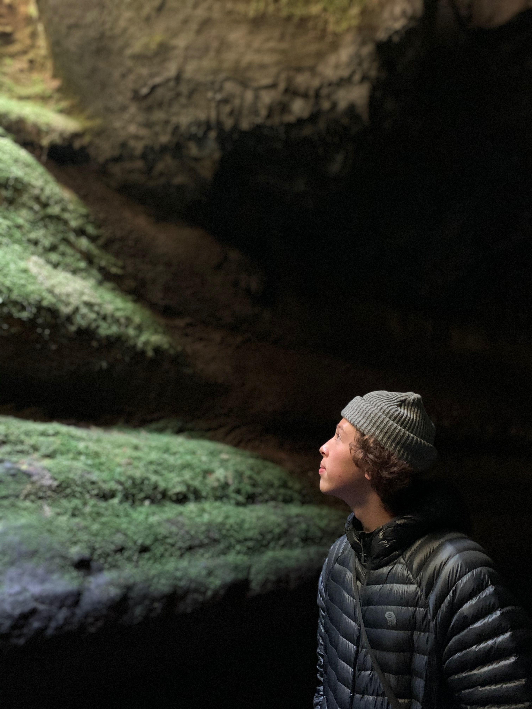

Matt Nguyen
Computer Science Lab Assistant
About Me:
My name is Matt Nguyen and I am a sophomore Computer Science student at Gonzaga University.
I grew up in Portland, OR and lived there for 18 years, graduating from Westview Highschool
in 2021. Some of my acomplishments include, Gonzaga Underclassman in Mathematics
Nominee, AP Scholar, and Gonzaga Regents Scholarship. Up to this point, I've taken numerous
Computer Science classes at Gonzaga and have developed some informal project experience, but am
highly interested in pursuing a software developer internship.